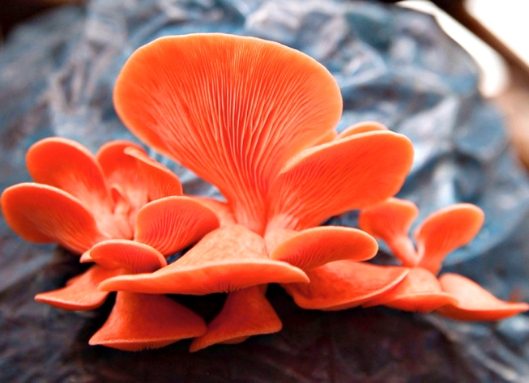

Somos uma empresa de Tecnologia que visa revolucionar o mercado
do Agronegócio
Surgiram novas necessidades aos produtores agrícolas.
Uma dessas necessidades relaciona se com as
exigências que os maiores clientes começaram a fazer no
sentido de documentar as informações e ter uma análise
do que foi realizado. Por este motivo a MushSolution
nasceu.
Tecnologia
A MushSolution tem como maior função ajudar os produtores de cogumelos, a evitar a perda da safra e ter o
controle da temperatura do vegetal e inspecionar a plantação direta da sua mão, logo facilitar a burocracia
para a venda dos seus produtos.
Faríamos esse trabalho com domínio da temperatura, através do uso do sensor DHT11 que tem
a aquisição de dados por um tempo determinado, e informaria a temperatura do momento e
acionaria alertas de nível crítico ao ideal, quando a temperatura
aumentar ou diminuir, tudo preestabelecido pelo software do Arduino.

A MushSolution está aqui auxiliar seu cultivo de cogumelos.
A produção de cogumelos de maneira controlada tem muitas vantagens,
como a ultilização de estufas e o mais importante o controle de temperatura e umidade,
garantindo assim maior qualidade e produtividade.
A MushSolution é especializada em controle de temperatura,
e garantimos nosso serviço.
Saiba Um Pouco Sobre Nós!
Uma empresa que busca soluções adequadas em relação a umidade,
temperatura e o bem-estar no cultivo de cogumelos através de tecnologias atuais,
normas agrícolas e estudos científicos.
Objetivo
Criar um ambiente ergonômico que visa a saúde e produtividade dos cogumelos,
alinhado com as normas agrícolas. Tendo como principal foco a temperatura e umidade
adequada e monitorada para o uso dos consumidores, com melhoria na produtividade e execução do cultivo.
 Somos uma empresa de Tecnologia que visa revolucionar o mercado
do Agronegócio
Somos uma empresa de Tecnologia que visa revolucionar o mercado
do Agronegócio